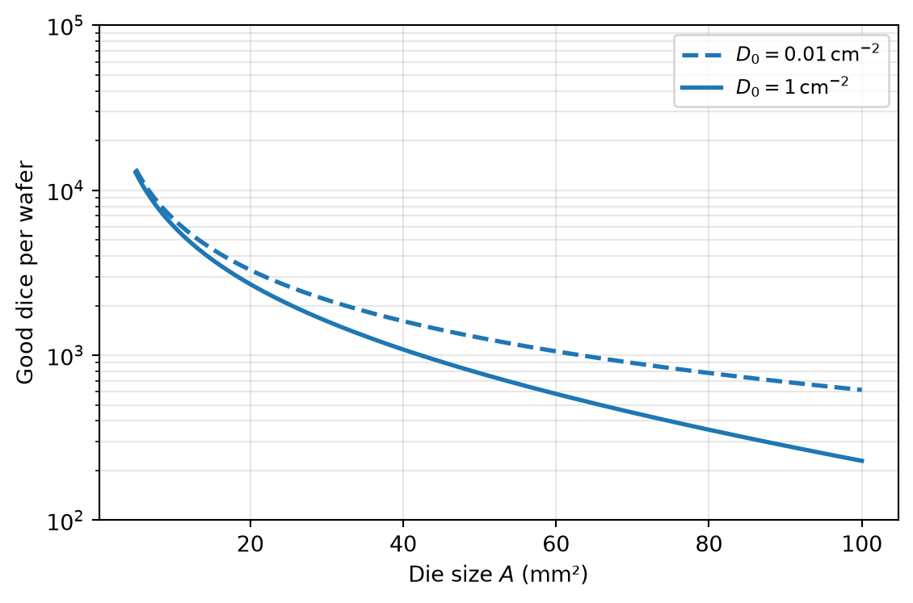
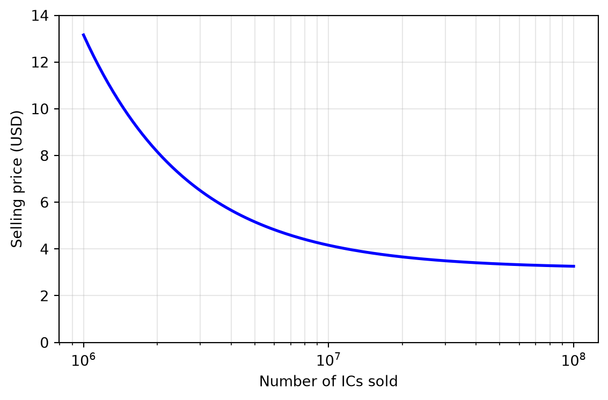

Economy of Integrated Circuits
Design of Complex Integrated Circuits
7 Economy of Integrated Circuits
7.1 Selling Price and Total Cost
Selling Price and Total Cost
\[ S_\mathrm{tot} = \frac{C_\mathrm{tot}}{1 - m} \tag{57}\]
Selling Price and Total Cost
| Profit margin | Selling price |
|---|---|
| 30 % | \(S_\mathrm{tot} \approx 1.4 \cdot C_\mathrm{tot}\) |
| 50 % | \(S_\mathrm{tot} = 2 \cdot C_\mathrm{tot}\) |
| 70 % | \(S_\mathrm{tot} \approx 3.3 \cdot C_\mathrm{tot}\) |
Selling Price and Total Cost
\[ C_\mathrm{tot} = R_\mathrm{tot} + \frac{F_\mathrm{tot}}{N_\mathrm{sold}} \tag{58}\]
7.2 Non-Recurring Engineering Cost
Non-Recurring Engineering Cost
\[ F'_\mathrm{tot} = E_\mathrm{tot} + P_\mathrm{tot} + I_\mathrm{tot} \tag{59}\]
Non-Recurring Engineering Cost
| Technology | Estimated mask-set cost |
|---|---|
| CMOS 180 nm | $80k |
| CMOS 28 nm | $1.5M |
| CMOS 5 nm | > $10M |
Non-Recurring Engineering Cost
- Hard IP: circuit blocks defined at the mask (layout) and transistor (netlist) level.
- Firm IP: logic-level/register netlist.
- Soft IP: described at the register-transfer level (RTL) in an HDL.
7.3 Recurring Cost
Recurring Cost
\[ R_\mathrm{tot} = R_\mathrm{die} + R_\mathrm{pack} + R_\mathrm{test} \tag{60}\]
7.3.1 Dice per Wafer
\[ R_\mathrm{die} = \frac{W}{N \cdot Y} \tag{61}\]
\[ N \approx d \pi \left( \frac{d}{4 A} - \frac{1}{\sqrt{2 A}} \right) \tag{62}\]
Dice per Wafer
7.3.2 Yield
\[ Y = \left( \frac{1 - e^{- A D_0}}{A D_0} \right)^2 \approx e^{-A D_0} \tag{63}\]
Yield

7.4 An Exemplary Calculation
An Exemplary Calculation
Note 5: IC Cost and Selling Price
Let us calculate the required selling price for an IC using the following assumptions:
| Parameter | Value |
|---|---|
| Wafer cost \(W\) for a \(d = 200\,\text{mm}\) wafer | $1500 |
| Die size \(A\) | 15 mm² |
| Yield \(Y\) | 95 % |
| Targeted gross margin \(m\) | 50 % |
| NRE plus fixed cost \(F_\mathrm{tot}\) | $5M |
| Package and test cost | $0.75 |
Using Equation 62 with \(d = 196\,\text{mm}\) (2 mm edge exclusion), we get \(N \approx 1900\) dice per wafer, and with Equation 61, the cost per die is
\[ R_\mathrm{die} = \frac{\$1500}{1900 \cdot 0.95} = \$0.83 \]
The total recurring cost per die is (using Equation 60)
\[ R_\mathrm{tot} = \$0.83 + \$0.75 = \$1.58 \]
The required selling price is strongly dependent on the number of ICs sold (using Equation 57 and Equation 58):
\[ S_\mathrm{tot} = \frac{1}{1 - m} \left( R_\mathrm{tot} + \frac{F_\mathrm{tot}}{N_\mathrm{sold}} \right) = 2 \left( \$1.58 + \frac{\$5\,\text{M}}{N_\mathrm{sold}} \right) \]
An Exemplary Calculation
IC Cost and Selling Price
The resulting selling price versus sales volume is plotted in Figure 71: in the left region (low volume), the fixed cost \(F_\mathrm{tot}\) dominates the selling price, whereas for larger volumes the recurring cost \(R_\mathrm{tot}\) becomes crucial.
An Exemplary Calculation
IC Cost and Selling Price

References
Murphy, Bernard T. 1964. “Cost-Size Optima of Monolithic Integrated Circuits.” Proceedings of the IEEE 52 (12): 1537–45. https://doi.org/10.1109/PROC.1964.3442.
Vries, Dirk K. de. 2005. “Investigation of Gross Die Per Wafer Formulas.” IEEE Transactions on Semiconductor Manufacturing 18 (1): 136–39. https://doi.org/10.1109/TSM.2004.836656.